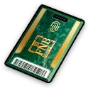

Chaves no ROB RUN: o que cada uma abre
Looty Bay tem 14 Chaves do Cofre, 13 Chaves do Quarto e 6 chaves e cartões especiais para as salas mais valiosas. As chaves aparecem pela cidade ou saem no escambo com o Lenny. Ao pegar uma chave, a fechadura dela é marcada no mapa. Só criminosos podem usar chaves, então coloque a máscara antes.
Atualizado em . O jogo está em acesso antecipado e muda toda semana.
Como as chaves funcionam
- Pela cidade toda há chaves que abrem pequenos cofres e portas trancadas. Atrás das fechaduras costuma haver saque valioso.
- Ao pegar uma chave, a fechadura dela é marcada no mapa. A descrição da chave também diz o que ela abre.
- Só criminosos podem usar chaves.
- Atrás da porta suspeita do Motel do Lenny há o escambo: lá você troca seus achados por perfuratrizes, chaves e outras ferramentas de assalto.
Chaves do Cofre
 As 14 se chamam “Chave do Cofre”. A descrição de cada chave diz qual cofre ela abre:
As 14 se chamam “Chave do Cofre”. A descrição de cada chave diz qual cofre ela abre:
| Bairro | O que abre |
|---|---|
| Recanto do Sol | Abre o cofre no Hotel Seasons do Recanto do Sol. |
| Recanto do Sol | Abre o cofre no Hotel Reef do Recanto do Sol. |
| Recanto do Sol | Abre o cofre na farmácia do Recanto do Sol. |
| Recanto do Sol | Abre o cofre na cafeteria no píer do Recanto do Sol. |
| Recanto do Sol | Abre o cofre na loja de conveniência do Recanto do Sol. |
| Recanto do Sol | Abre o cofre na loja de eletrônicos do Recanto do Sol. |
| Centro | Abre o cofre na loja de conveniência no norte do Centro. |
| Centro | Abre o cofre na loja de conveniência no meio do Centro. |
| Centro | Abre o cofre na farmácia do Centro. |
| Centro | Abre o cofre na cafeteria do Centro. |
| Centro | Abre o cofre no posto de gasolina do Centro. |
| Loraine Hills | Abre o cofre na mansão de Loraine Hills. |
| Loraine Hills | Abre o cofre em um dos chalés de Loraine Hills. |
| — | Abre o cofre na boate. |
Chaves do Quarto
 As 13 se chamam “Chave do Quarto”. A descrição diz qual quarto ela abre:
As 13 se chamam “Chave do Quarto”. A descrição diz qual quarto ela abre:
| Bairro | O que abre |
|---|---|
| Recanto do Sol | Abre a sala trancada na loja de armas do Recanto do Sol. |
| Recanto do Sol | Abre a sala trancada na loja de equipamentos do Recanto do Sol. |
| Recanto do Sol | Abre a sala trancada na farmácia do Recanto do Sol. |
| Recanto do Sol | Abre a sala trancada na loja de conveniência do Recanto do Sol. |
| Recanto do Sol | Abre a sala trancada em um dos hotéis do Recanto do Sol. |
| Centro | Abre a sala trancada na loja de armas do Centro. |
| Centro | Abre a sala trancada na loja de equipamentos do Centro. |
| Centro | Abre a sala oculta à esquerda no posto de gasolina do Centro. |
| Centro | Abre a sala oculta à direita no posto de gasolina do Centro. |
| Centro | Abre a sala trancada na farmácia do Centro. |
| Centro | Abre a sala trancada na loja de conveniência do Centro. |
| Loraine Hills | Abre a sala trancada em um dos chalés de Loraine Hills. |
| — | Abre a sala VIP na boate. |
Cartões-chave e chaves especiais
 Grand Hotel: depósito secreto
Grand Hotel: depósito secreto Delegacia: sala trancada
Delegacia: sala trancada
Banco: carteira de identidade do cofre de ouroSeis chaves e cartões especiais abrem as salas mais valiosas da cidade:
| Bairro | O que abre |
|---|---|
| Recanto do Sol | Abre o depósito secreto no Grand Hotel do Recanto do Sol. |
| Centro | Abre o cofre de ouro no banco. |
| Loraine Hills | Abre a sala trancada em um dos chalés de Loraine Hills. |
| Palmside | Abre a sala trancada na delegacia. |
| Palmside | Abre o arsenal na delegacia. |
| Palmside | Abre o cofre na galeria. |
Como conseguir a perfuratriz e a carteira de identidade do cofre de ouro
- Destranque quartos trancados e hackeie os computadores lá dentro: assim a Ferramenta de Hacking USB enche.
- Troque a ferramenta cheia por uma perfuratriz no escambo, ou venda.
- O cofre do banco só abre com perfuratriz. Ela trabalha devagar e faz barulho, e assim que é instalada, Looty Bay inteira fica sabendo.
- Cada cofre de banco que você abre enche as Chaves de Cofres. Cheias, elas são trocadas no escambo pela carteira de identidade do cofre de ouro ou vendidas.
Gazuas, chave mestra e outras ferramentas
 GazuaPermite destrancar portas e contêineres sem disparar o alarme, além de destrancar o porta-malas de veículos alheios.
GazuaPermite destrancar portas e contêineres sem disparar o alarme, além de destrancar o porta-malas de veículos alheios. Chave mestraUma chave para acessar os depósitos protegidos de outros jogadores.
Chave mestraUma chave para acessar os depósitos protegidos de outros jogadores. Gazua do Porta-malasUma ferramenta para arrombar o porta-malas de um veículo.
Gazua do Porta-malasUma ferramenta para arrombar o porta-malas de um veículo. PerfuratrizUma ferramenta para arrombar cofres bancários. Leva muito tempo para fazer seu trabalho e é muito barulhenta.
PerfuratrizUma ferramenta para arrombar cofres bancários. Leva muito tempo para fazer seu trabalho e é muito barulhenta. MiniperfuratrizCompacta e precisa. Arromba fechaduras de cofres rapidamente.
MiniperfuratrizCompacta e precisa. Arromba fechaduras de cofres rapidamente. Cortador de ParafusosPode ser usado para cortar o cabo de energia em um assentamento.
Cortador de ParafusosPode ser usado para cortar o cabo de energia em um assentamento. Ferramenta de Hacking USBPreencha ao hackear computadores em salas trancadas. Ao encher totalmente, troque ou venda por um bom preço.
Ferramenta de Hacking USBPreencha ao hackear computadores em salas trancadas. Ao encher totalmente, troque ou venda por um bom preço. Chaves de CofresPreencha ao arrombar cofres. Ao encher totalmente, pode ser trocado pela carteira de identidade que abre o cofre de ouro do banco ou vendido por um bom preço.
Chaves de CofresPreencha ao arrombar cofres. Ao encher totalmente, pode ser trocado pela carteira de identidade que abre o cofre de ouro do banco ou vendido por um bom preço. Chave do IateAcesso a um palácio flutuante. Não posso roubar um iate, mas quem pode pagará uma fortuna por esta chave.
Chave do IateAcesso a um palácio flutuante. Não posso roubar um iate, mas quem pode pagará uma fortuna por esta chave.
Perguntas frequentes
Como usar uma chave no ROB RUN?
Coloque a máscara: só criminosos podem usar chaves. Ao pegar uma chave, a fechadura é marcada no mapa, e a descrição da chave diz o que ela abre.
Onde conseguir chaves?
As chaves aparecem pela cidade junto com o resto do saque. Chaves e ferramentas também saem no escambo atrás da porta suspeita do Motel do Lenny.
O que o cartão-chave abre?
O cartão-chave abre o depósito secreto do Grand Hotel no Recanto do Sol. As outras chaves especiais abrem a sala trancada e o arsenal da Delegacia, o cofre da galeria, o cofre de ouro do banco e um quarto num chalé de Loraine Hills.
Como abrir o cofre do banco?
Só com uma perfuratriz, que sai no escambo em troca de uma Ferramenta de Hacking USB cheia. Ela trabalha devagar e com barulho, e Looty Bay inteira fica sabendo quando é instalada.
Qual a diferença entre a gazua e a chave mestra?
A gazua abre portas e contêineres sem disparar o alarme, e porta-malas alheios. A chave mestra abre os armazéns protegidos de outros jogadores: os cofres e prateleiras das bases deles.
Mais sobre ROB RUN
- Mapa de Looty Bay
- Guia para iniciantes
- Conta no banco e lavagem
- O que fazer com cargas
- Como virar policial
- Calculadora de decodificadores
- Guias
Listas, nomes, descrições e imagens das chaves e ferramentas: arquivos do jogo (24 nov 2026).